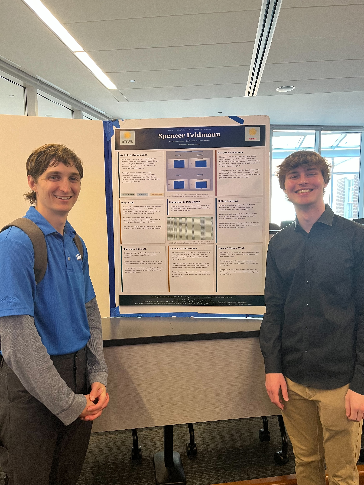

ARCHIVE
Selected software work, systems projects, and technical experiments.
SERVICE LEARNING / INTERNSHIP · COLLEGE PARK SCHOLARS
Climate Resiliency Data Workbook & Dashboards
Habitat for Humanity Metro Maryland · Data Analyst Intern
I served as a Data Analyst Intern with Habitat for Humanity Metro Maryland, supporting their Climate Resiliency Program. What began as a volunteer placement evolved into an internship-level role centered on data infrastructure. The program delivers free weatherization, electrification, and solar services to low-income homeowners in Montgomery and Prince George's Counties, helping families reduce utility bills and lower greenhouse gas emissions.
WHAT I DID
- Built an Excel-based workbook aggregating client-level energy and emissions data across both counties, broken down by program, fuel source (electricity, oil, propane, natural gas, diesel), and household.
- Designed multiple dashboards, by county, program, project type, fuel source, and an overall overview, to communicate utility savings and GHG reductions in a way that highlights equity gaps, not just totals.
- Identified and surfaced a key funding disparity between counties so it is clearly visible across all dashboards and program reporting.
KEY ETHICAL DILEMMA
Montgomery County has 4 available grants; Prince George's County has only 2. This funding gap means fewer families in PG County receive weatherization and electrification upgrades, even though both counties are served by the same program.
A data justice approach makes this disparity impossible to ignore by breaking outcomes down by county and demographics rather than reporting only totals. Making gaps visible is how data becomes advocacy.
CONNECTION TO DATA JUSTICE
Energy savings data is never neutral. The way we collect and visualize it shapes who gets counted, who benefits, and what counts as success. Design choices in data presentation carry moral weight, what you show, how you group it, and what you leave out all have real consequences.
SKILLS & LEARNING
Technical: Managing complex real-world datasets; building structured Excel workbooks; designing multiple dashboards for non-technical audiences.
Professional: Delivering work that matches a client's vision; staying flexible when the roadmap isn't fully visible; communicating across roles.
Ethical: Design choices in data presentation carry moral weight - what you show, how you group it, and what you leave out all have real consequences.
PROJECT POSTER
.png)
College Park Scholars Data Justice Practicum · Service Learning / Internship
PRESENTATION

With Andrew Fellows (Data Justice Program Director) and Jess Feltner (Program Advisor)

With Nicholas Deak, Manager & Head of the Climate Resiliency Program at Habitat for Humanity Metro Maryland
ARTIFACTS & DELIVERABLES
The primary artifact is an Excel workbook containing multiple dashboards organized by county, program, project type, and fuel source - showing total utility savings and GHG reductions as well as averages per client. Supporting visualizations use bar charts and summary tables designed for community-facing communication, highlighting equity gaps rather than masking them.
WORKBOOK SHEETS
· EEAOP + HEECAP - weatherization and electrification program data
· MEA SEE - solar program data
· MEA EEE - weatherization and electrification program data
· Appended Program Table - combined dataset across all programs
· County Dashboard - outcomes broken down by county
· Program Dashboard - outcomes broken down by program
· Project Dashboard - outcomes broken down by project type
· Fuel Sources Dashboard - outcomes broken down by fuel source
· Overview Dashboard - total utility savings and GHG reductions across all programs
· References - data sources and emission factor references
CHALLENGES & GROWTH
Navigating ambiguity: The roadmap isn't always fully visible, which teaches adaptability over perfect planning.
Professional formation: Learning formatting standards and workplace norms faster than any classroom setting.
Delivering for others: Constantly checking that the work solves the right problem, not just building something that works for yourself.
IMPACT & FUTURE WORK
This experience reframed how I think about data: not as objective truth, but as choices with real consequences for real communities.
The dashboards can help Habitat advocate for more equitable funding, making the case with evidence, not just argument.
Going forward, I want to work at the intersection of data, policy, and equity where numbers actually matter to people's lives.
ACKNOWLEDGMENTS
Habitat for Humanity Metro Maryland · College Park Scholars Data Justice faculty and mentors · University of Maryland
Special thanks to Nicholas Deak for his constant support and hands-on guidance as manager, Sandra Limjuco for helping initiate this opportunity, Andrew Fellows for being an excellent mentor and teacher, and Jess Feltner for her thoughtful advice and continued support throughout the Scholars program.